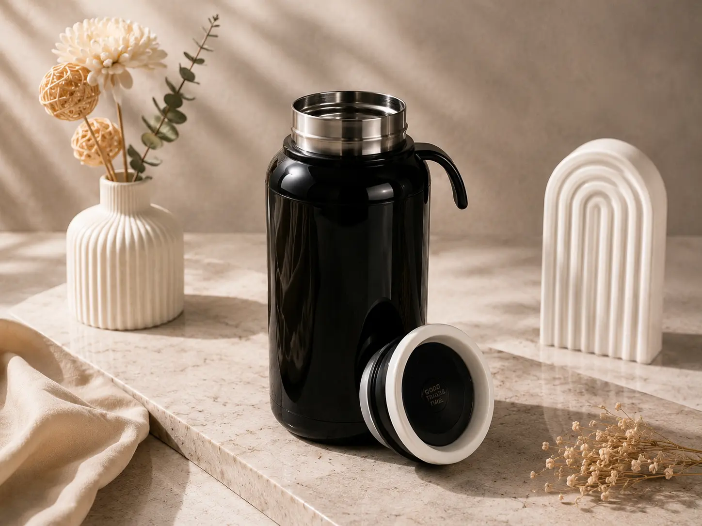

Penggunaan tumbler custom souvenir kantor saat ini telah menjadi standar emas cinderamata korporat karena tidak hanya fungsional dan digunakan berulang kali setiap hari, tetapi juga mendukung komitmen gaya hidup ramah lingkungan (*eco-friendly*). Memilih tumbler yang tepat dengan kualitas bahan *food-grade* dan teknik branding logo yang awet akan memastikan investasi cinderamata perusahaan Anda memberikan dampak visibilitas jangka panjang.
Bagi divisi HRD, panitia seminar, maupun divisi pemasaran di area Jabode, memilih tumbler custom membutuhkan pemahaman menyeluruh terhadap material insulasi, kapasitas isi, serta teknik cetak yang paling tahan cuci. Dalam artikel ini, tim GiftCraft merangkum seluruh aspek penting yang wajib Anda ketahui sebelum memesan tumbler custom dalam jumlah besar.
Daftar Isi Artikel
- 1. Memahami Pilihan Material Tumbler Populer
- 2. Menentukan Ukuran Kapasitas yang Paling Pas
- 3. Memilih Teknik Branding Logo: Laser Engraving vs UV Print
- 4. Fitur Modern: Indikator Suhu LED dan Filter Teh
- Tabel Perbandingan Jenis Tumbler Souvenir
- Kesimpulan & Saran Pemesanan
- FAQ Seputar Tumbler Custom
1. Memahami Pilihan Material Tumbler Populer
Material adalah penentu utama daya tahan dan persepsi kualitas tumbler. Di pasaran corporate gift terdapat 3 jenis bahan dominan:
- Stainless Steel SUS 304 (Double Wall Vacuum): Merupakan pilihan terbaik untuk souvenir eksekutif dan onboarding kit. Memiliki lapisan hampa udara ganda yang mampu menahan suhu air panas hingga 12 jam dan dingin hingga 24 jam tanpa mengembun di bagian luar.
- Bambu Alami (Eco Bamboo Flask): Lapisan luar terbuat dari serat bambu alami yang memberikan kesan organik, hangat, dan ramah lingkungan, dengan bagian dalam tetap menggunakan stainless food grade.
- Plastik BPA-Free / Insert Paper: Pilihan ekonomis untuk acara seminar massal ribuan peserta. Logo dicetak full color pada kertas laminasi glossy yang disisipkan di antara dinding akrilik transparan.
Tips Standar Food-Grade:
Pastikan tumbler yang dipesan memiliki sertifikasi bebas racun (BPA Free) dan menggunakan stainless steel tipe SUS 304 atau SUS 316 agar tidak berbau logam serta aman digunakan untuk kopi, teh, maupun air putih bersuhu tinggi.
2. Menentukan Ukuran Kapasitas yang Paling Pas
Ukuran 500 ml adalah ukuran paling ideal dan serbaguna (*sweet spot*) untuk souvenir kantor karena pas di tempat botol mobil, tas ransel laptop, dan tidak terlalu berat saat dibawa bekerja. Untuk acara olahraga atau gathering outdoor, Anda dapat memilih kapasitas 600 ml - 750 ml.
Ingin Melihat Sampel Fisik Tumbler Custom Logo Anda?
Konsultasikan varian tumbler dan estimasi harga grosir bersama representatif GiftCraft!
3. Memilih Teknik Branding Logo: Laser Engraving vs UV Print
Metode pencetakan logo pada tumbler menentukan ketahanan estetika dalam jangka waktu tahunan:
- Laser Engraving (Grafir Laser): Sinar laser mengikis lapisan cat luar hingga memunculkan kilau perak stainless di bawahnya. Hasil ukiran permanen, tidak akan luntur walau dicuci berkali-kali menggunakan sabun cuci piring. Memberi kesan minimalis dan sangat mewah.
- Print UV Flatbed: Menggunakan tinta ultraviolet yang mengering seketika. Mampu mencetak logo perusahaan yang memiliki banyak gradasi warna, efek timbul (*emboss UV*), dan warna presisi sesuai pantone brand guideline Anda.
4. Fitur Modern: Indikator Suhu LED dan Filter Teh
Tumbler pintar (*smart tumbler*) dengan sensor temperatur LED di bagian tutup atas kini menjadi favorit di kalangan profesional muda. Penerima cukup menyentuh layar tutup botol untuk mengetahui derajat kepanasan minuman di dalamnya tanpa risiko lidah melepuh. Ditambah saringan teh (*tea strainer*) stainless steel, tumbler menjadi teman setia di meja kerja.
Tabel Perbandingan Jenis Tumbler Souvenir GiftCraft
| Tipe Tumbler | Insulasi Suhu | Teknik Branding | Estimasi Budget | Cocok Digunakan |
|---|---|---|---|---|
| Tumbler LED Smart Flask | 8 - 12 Jam | Laser Grafir / UV Print | Menengah | Onboarding Kit, Hadiah Karyawan |
| Tumbler Classic Vacuum Flask | 12 - 24 Jam | Laser Grafir Permanen | Menengah - Premium | Corporate Gift Klien, Souvenir VIP |
| Tumbler Bamboo Eco-Wood | 6 - 10 Jam | Laser Grafir Kayu | Premium | Acara Keberlanjutan / ESG Korporat |
| Tumbler Sport Aluminium | Non-Vakum (Single) | Sablon Rotary / UV | Ekonomis | Family Gathering, Fun Run Kantor |
Kesimpulan & Saran Pemesanan
Tumbler custom adalah souvenir kantor yang paling tinggi rasio kepuasannya karena kepraktisan dan fungsinya. Pilihlah bahan stainless steel double wall berkapasitas 500ml dengan ukiran laser engraving untuk daya tahan abadi. Pastikan pula Anda memesan pada produsen berpengalaman seperti GiftCraft untuk jaminan kualitas presisi tanpa risiko barang bocor atau cacat produksi.
Pertanyaan Umum Seputar Tumbler Custom
Berapa minimal order pemesanan tumbler custom logo di GiftCraft?
Minimal order tumbler custom logo adalah 50 unit. Untuk pesanan paket khusus onboarding kit, pemesanan dapat dimulai dari 25 unit.
Apakah logo hasil laser grafir bisa pudar saat dicuci?
Tidak. Laser grafir bekerja dengan cara mengikis lapisan cat secara mikro, sehingga ukiran logo menyatu permanen dengan material logam dan tidak akan pudar selamanya.
Apakah tumbler sudah dilengkapi dengan kardus kemasan?
Setiap unit tumbler sudah dilengkapi box karton standar bawaan. Kami juga menyediakan opsi upgrade ke Exclusive Hardbox dengan pita dan busa presisi untuk bingkisan VIP.
Siap Memproduksi Tumbler Custom Berlogo Perusahaan Anda?
Hubungi hotline kami untuk berdiskusi mengenai artikel "Panduan Memilih Tumbler Custom". Dapatkan sampel fisik, katalog varian warna, dan penawaran harga grosir terbaik untuk wilayah Jabode!
Konsultasi Tumbler via WhatsApp
Rina Kusuma
Product Quality & Merchandise SpecialistKonsultan produk GiftCraft yang berfokus pada riset material merchandise modern, tren souvenir ramah lingkungan, dan standar Quality Control produk stainless steel korporat.